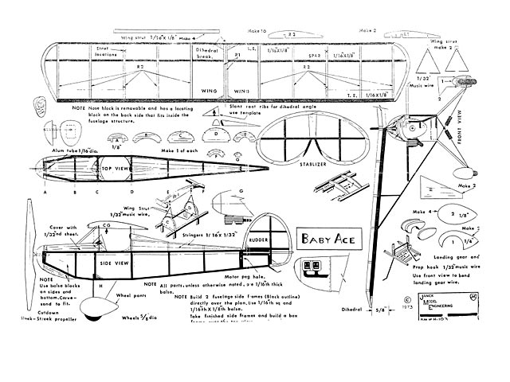

20 years after the Wright brothers first took flight, Orland Corben envisioned a world where everyone had access to their own personal aircraft, not just the rich. He designed the first kitbuilt airplane, the Baby Ace, and the following year released a 2-seat version called the Junior Ace.
With now 6 different models to choose from, each with slight upgrades or variations, there is a Ace that will suit anyones needs.
For more history on the Corben Baby Ace and other models, click here
| Model | Year | Max Speed (kt) | Service Ceiling (ft) | Rate of Climb (fpm) | Seats |
|---|---|---|---|---|---|
| Baby Ace B-D | 1929 | 87-91 | 10,500-16,000 | 1,200 | Signle |
| Junior Ace | 1930 | 113 | 10,500 | 600 | Two |
| Super Ace | 1935 | 139 | 15,000 | 800 | Signle |